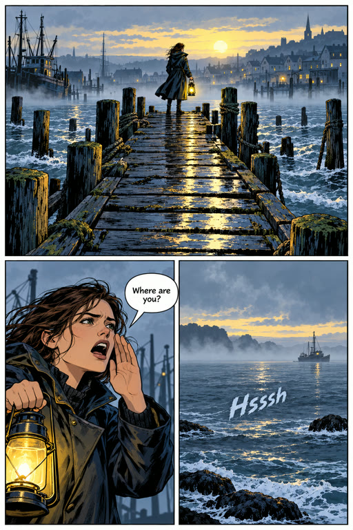
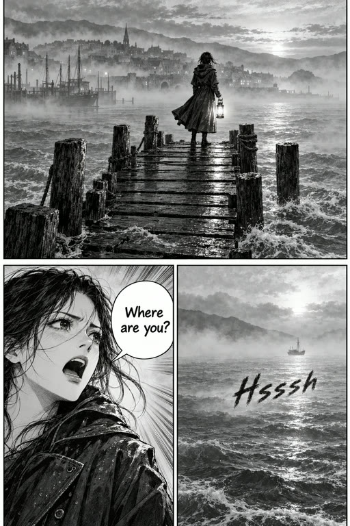
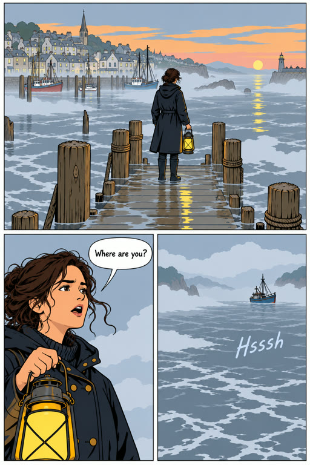
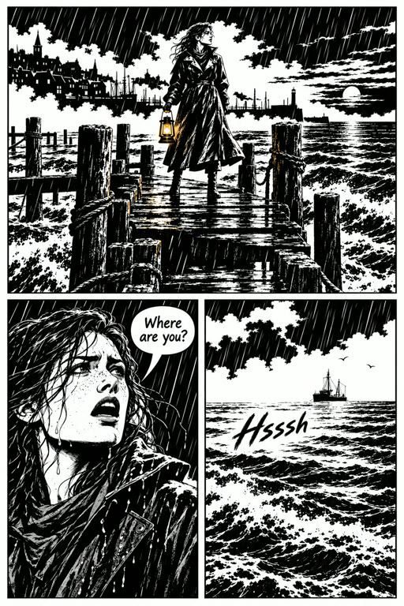
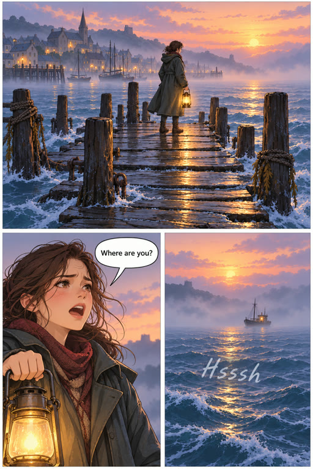
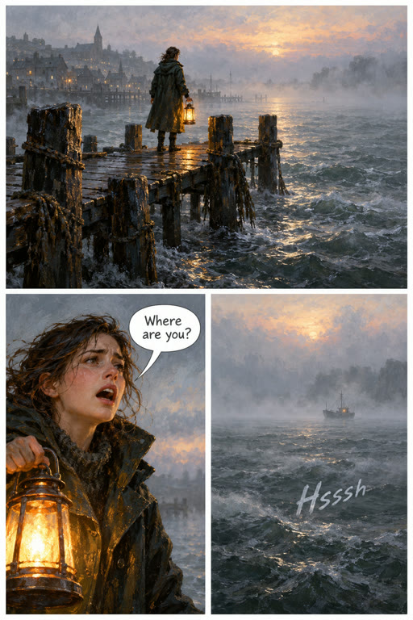
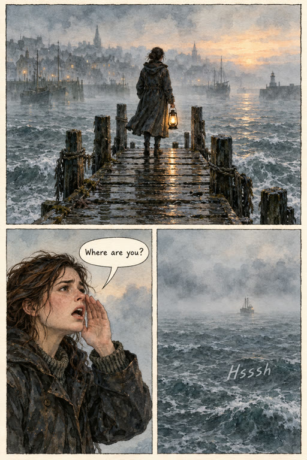
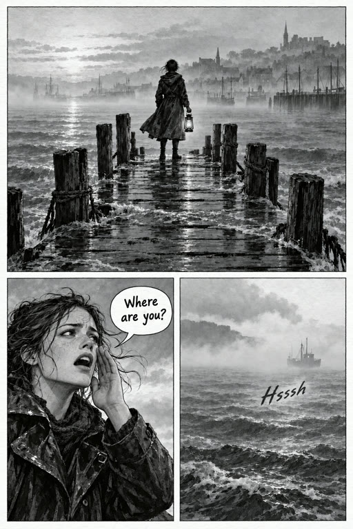
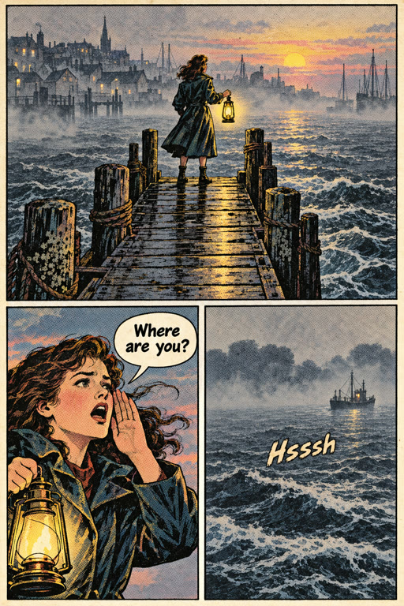

248a Tell a story: a graphic novel’s style, picked by its page
Tell a story
What kind of story?

NovelChapters, to read.

Audio dramaEpisodes, for the ear.

Graphic novelPages, to look at.
OtherNothing assumed.
Low Water, drawn
Low Water · book · 6 chapters

World lookThe world’s art direction

MangaBlack and white, screentone
SuperheroBold ink, four colours

Clean lineEven line, flat colour

NoirBlack, white, hard light

WebtoonSoft digital colour

PaintedBrushwork, no outline

WatercolourInk over washes

Ink and washBrush and greys

Vintage printHalftone on newsprint
Your ownDescribe it
Words for this styleSEEDED BY MANGA
Japanese manga: black and white only, crisp pen line, grey screentone shading, speed lines and dramatic close-ups.
BackPlan with Arke
248b Pages: Style, changed for the pages made next
Pages
1 · The tide2 · Salt3 · The bellStyleMangaReadingLeft to rightReadExport 1
1 2
2 3
34
+ Page
Page 3
Grid
Feature
Wide
Splash
Manga
Webtoon
Panel 1wide1 line
Maren alone on the flooded pier at dawn, the lighthouse beam in the fog.
Shows MarenThe pier
MarenThe pier
MarenThe pierCaption—The tide came in grey.
Panel 21 line
Maren close, collar up, calling out over the water.
ShowsMarenThe pier
MarenThe pierSpeechMarenWhere are you?
Panel 31 line
The empty water. Something moves under the surface.
Sound—Hsssh
+ Line
1
2
3
Make pageUntil it passesBriefGPT Image 2 · 2:3 · Maren, The pier ride · ~$0.25 · up to 3 · ~$0.75
Style · Low Water, drawn
Graphic novel · 24 pages · 23 made in Manga
World lookThe world’s art direction
MangaBlack and white, screentone
SuperheroBold ink, four colours
Clean lineEven line, flat colour
NoirBlack, white, hard light
WebtoonSoft digital colour
PaintedBrushwork, no outline
WatercolourInk over washes
Ink and washBrush and greys
Vintage printHalftone on newsprint
Your ownDescribe it
Words for this styleSEEDED BY NOIR
Crime noir comic: solid black shapes and stark white, hard light carving the figure, almost no midtones, rain and shadow as graphic shapes.
Pages made from nowCancelUse style